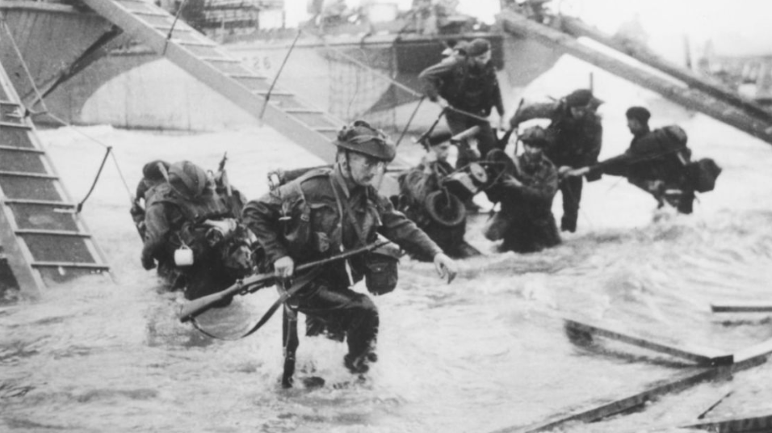
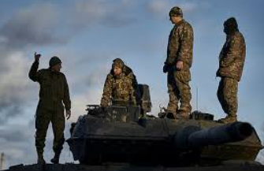
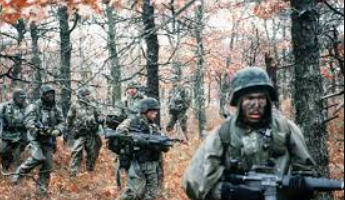

¡Excelente elección! Al decidir que Lía se quedará y liderará la rebelión, está eligiendo el camino del sacrificio y la valentía. Sabe que la lucha contra el Capitolio no será fácil, pero siente en su corazón que es el momento de actuar y que su pueblo merece una vida mejor.
Lía se reúne con "Los Fuegos" y les comparte su decisión. Juntos, comienzan a trazar un plan para movilizar a los distritos y crear un frente unido contra la opresión. Saben que necesitarán aliados, recursos y, sobre todo, un mensaje poderoso que inspire a otros a unirse a su causa.
Mientras trabajan en su estrategia, Lía se enfrenta a varios desafíos. El Capitolio está al tanto de los movimientos de la rebelión y ha comenzado a intensificar la vigilancia en el Distrito 12. Lía debe ser astuta y valiente, y cada decisión que tome podría cambiar el rumbo de la rebelión.
Ahora debes elegir entre una de estas 4 opciones creyendo que es el mejor camino para Lia:
Aliados |
Sabotaje |
Esperanza |
Entrenar |